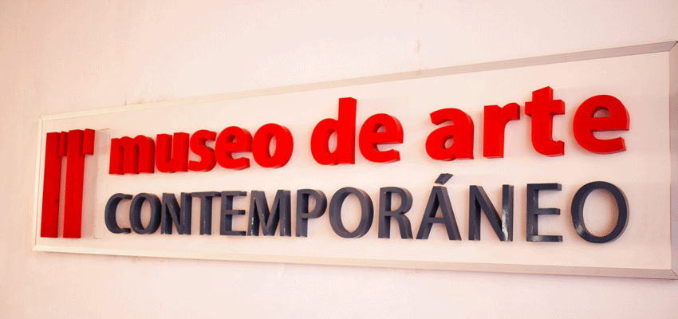
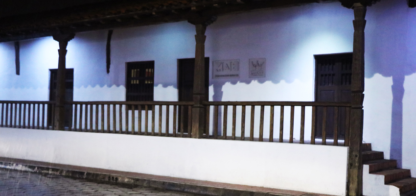

Calendariecito: Promoviendo el talento boliviano nos llena de orgullo.”
Calendariecito hace que organizarnos todos los días nos llene orgullo por ver reflejado en sus páginas el talento que se respira en Bolivia; con una evolución de ocho años y contando, extiende su mano hacia el arte boliviano con el deseo de llevarlo a diferentes partes del mundo; Marcela Rivera Prudencio y Alfredo Román Bulacio, gestores de este lindo proyecto y ahora un producto tangible vivo, dedican mucho más que trabajo para sacarlo adelante. En esta oportunidad Marcela Rivera Prudencio quién encabeza toda la gestión, nos brinda esos detalles que están detrás de escena y que muchos desconocemos.
¿Cuál es el impulso del Calendariecito y cómo nace?
MR: Nace con el único fin de imprimirnos y que nos “saquen” afuera, a todos los artistas ya que tienen mucho talento exportable. La idea era poder decir a la gente que viene de residencia de muchos lugares lo que sucede en Bolivia, existía la necesidad - como artistas -de imprimirnos porque no siempre podemos contar con un soporte impreso. Algo que las personas se puedan llevar acerca de lo que estaba pasando en Bolivia y más específicamente en Santa Cruz de la Sierra.
El proyecto nace con la participación de 12 artistas invitados, uno para ilustrar cada mes del año, queríamos que el primer número sea lo máximo, entrar con “patada voladora” decíamos nosotros. Al principio solo eran doce los artistas y con Alfredo Román, que es quien arrancamos el proyecto, esa era la idea inicial; el calendariecito en sus diferentes versiones ha ido evolucionando para expandirse y que muchos artistas puedan participar, incluso lanzamos una convocatoria todos los años, aproximadamente en julio, hacia el público donde vos podés enviar hasta tres piezas las cuales entran a una selección. Hoy Calendariecito es un producto que funciona y funciona muy bien, ya que cumple con su usabilidad: es un calendario práctico y cómodo, y los artistas tienen/tenemos una plataforma de difusión de lo que producimos y con una proyección a nivel nacional e internacional.
¿Qué disciplinas forman parte del Calendariecito?
MR: Hay de todo, fotografía, ilustraciones, artistas contemporáneos, diseño gráfico y muchísimo más. En algún momento Paola Senseve nos manda un pedazo de poesía, yo dije trascendimos la interdisciplinariedad, y ya con Rodrigo Bellott sobrepasamos lo digital, nos presenta su obra de teatro Tu me Manques a través de la fotografía de “Pakú” Alejandro Subirana. Las disciplinas ya han pasado totalmente el formato y el soporte, creo que la idea es expandirse, con Zoran Vranjican estamos viendo de incorporar la música en el calendariecito así que se vienen muchas sorpresas.
¿Cómo gestora del Calendariecito ve el apoyo de las personas?
MR: Como pueden ver cada año tenemos muchas marcas que nos apoyan y sería humanamente imposible poder hacerlo sin ellos, en algún momento contábamos con un gran apoyo del MAC cuando estaba Eduardo Rivera , ahora ya no contamos con el apoyo de la gobernación o de las autoridades, la mayoría de las empresas que nos apoyan son empresas privadas amigas la verdad es que es una carrera de resistencia, este año específicamente ha costado muchísimo pero ¡lo logramos! súper agradecida porque la gente apuesta por el proyecto que se realiza y como ya son varios años que dedicamos para sacarlo adelante es como un respaldo de que esto no es un chiste y esperemos sea para siempre, ver que el producto evolucione, crezca y se expanda promoviendo el talento boliviano nos llena de orgullo.
¿Dónde podemos encontrar el calendariecito y adquirirlo?
MR: En Santa Cruz en la Manzana 1 lo venden todo el año desde hace muchos años, también los pueden encontrar en la Casa Melchor Pinto – Calle Sucre y conmigo directamente al 700 86461 (si solicitás 5 te los llevamos donde estés gratis). En La Paz nos apoya la BICeBé Diseñadores Gráficos Bolivia – Gaby Córdova 725 58012.
Marcela Rivera nos recuerda:
En el 2017 hicimos público el compromiso de en los 10 Años de Calendariecito, publicaríamos un libro que aglutine todos los artistas que han sido parte de las publicaciones anuales mes tras mes deleitándonos con su piezas seleccionadas. Tenemos ganas de poder reunirlos a todos en una gran fiesta donde lo podamos presentar y festejar juntos en la casa que nos reciba para la ocasión.
SHARE:
Categorías
MÚSICA 0
TEATRO 1
Publicaciones Recientes
-
Publicado : 07/05/2019
-  Publicado : 10/01/2019
-
 Publicado : 03/01/2019
Publicado : 03/01/2019
-
 Publicado : 27/12/2018
Publicado : 27/12/2018
-
 Publicado : 19/11/2018
Publicado : 19/11/2018
-
 Publicado : 18/11/2018
Publicado : 18/11/2018
-
 Publicado : 12/11/2018
Publicado : 12/11/2018
-

Museo el Altillo Beni abrió sus puertas al público este 5 de noviembre
Publicado : 9/11/2018
Tags
ENTREVISTAS MUSEOS LITERATURA CCFR LITERATURA TITO KURAMOTTO TEATRO DE LOS ANDES MUSEO DE ARTE CONTEMPORÁNEO CALENDARIECITO